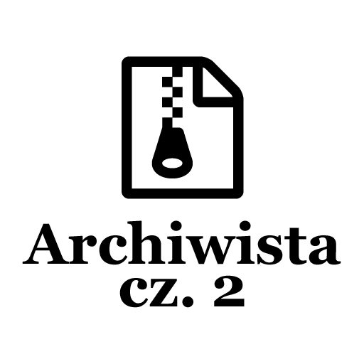
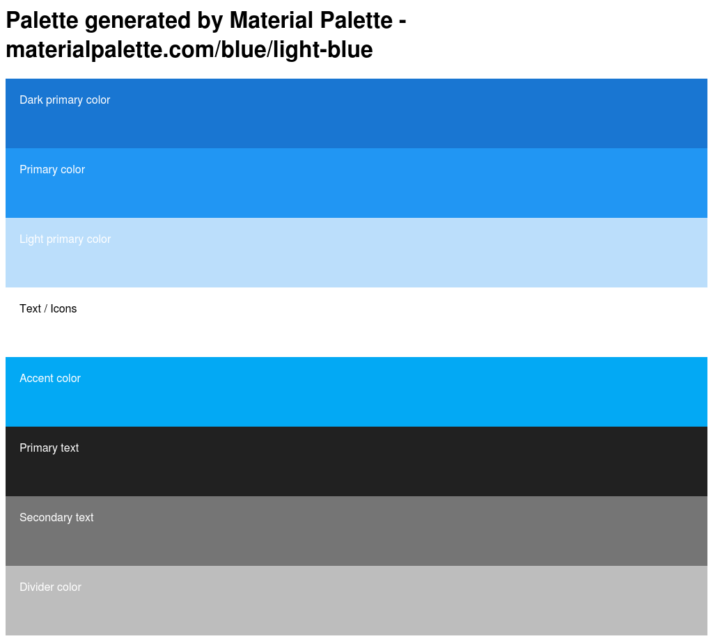
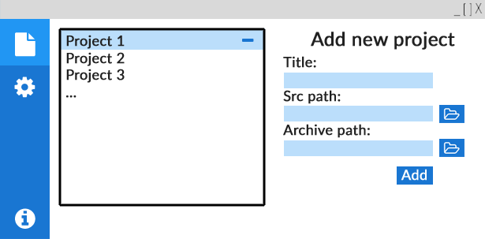

Post archive
Archiwista [cz. 2 - Projekt GUI]

GUI — Graphical user interface, czyli graficzny interfejs użytkownika. Czy jest nam potrzebny akurat w tej aplikacji? Nie, ale znacznie poprawi dostępność aplikacji. Jeżeli dobrze napiszemy program, to sposób jego prezentacji nie ma znaczenia, dlatego że aplikacja powinna działać z interfejsem graficznym jak i bez niego.
Kolory
Podczas projektowania interfejsu graficznego na pewno będziemy musieli skorzystać z jakichś kolorów. Na szczęście w Internecie można znaleźć strony, które udostępniają gotowe palety kolorów. Dzięki takiej palecie nie musimy się martwić o to, czy kolory będą pasować do siebie. Jedną z takich stron jest materialpalette.com z której skorzystam. Stronami o podobnej tematyce, ale świadczące odrobinę inne usługi są materialui.co oraz coolors.co. Dla tej aplikacji wybrałem kolory w odcieniach niebieskiego, a swoją paletę wygenerowałem na stronie Material Palette.
{kind=link}

Czcionki
Skoro wybraliśmy już kolory z których będziemy korzystać, musimy rozglądać się za czcionką. Jako główną czcionkę wybrałem czcionkę Lato autorstwa Łukasza Dziedzica, udostępnioną na licencji Open Font License. Licencja ta pozwala nam na dowolne korzystanie z niej, dopóki nie będziemy sprzedawać czcionki samej w sobie. Podczas wyboru czcionki musimy zwrócić uwagę na to, czy obsługuje ona litery z języka, w którym będziemy tworzyć aplikację. Tym razem nie ma to znaczenia, ponieważ aplikacja będzie w pełni po angielsku.
Kolejną czcionką, która przyda się podczas tworzenia aplikacji będzie Font Aswome. Jest to czcionka składająca się z ikon. Przydatna rzecz do tworzenia przycisków z obrazami, zamiast wyświetlać obrazy pobrane z internetu ustawiamy czcionkę na przycisk i używamy odpowiedniego kodu, aby wyświetlić obrazek. Obrazki są przechowywane jak czcionka w grafice wektorowej przez co nie jesteśmy ograniczeni do jednego rozmiaru i możemy robić na nich wszelkie operacje jak na zwykłych czcionkach. Font Awsome jest udostępniona na licencji Open Font License.
Interfejs
W przypadku tej aplikacji zdecydowałem się na interfejs graficzny. Analizując wymagania aplikacji narysowałem w photoshopie wstępną wizję aplikacji (rysunek nie zachowuje skali).
{kind=link}
